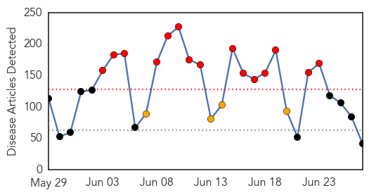

30 Day Trends
Web: 15 alerts, 4 warnings
Twitter: 7 alerts, 11 warnings
Top Articles:
- 0.999
- Mers may have spread to new Seoul hospital
- 0.999
- South Korea Reports One New MERS Case
- 0.998
- Seoul hospital watched amid fear of Mers spread, while three suspected cases in Hong Kong come back negative
- 0.998
- South Korea fears Mers may have spread to new hospital, Government & Economy
- 0.998
- (4th LD) S. Korea reports one new case of MERS, bringing total to 182
- 0.997
- S Korea fears MERS may have spread
- 0.997
- (3rd LD) S. Korea reports one new case of MERS, bringing total to 182
- 0.996
- (3rd LD) S. Korea reports one new case of MERS, bringing total to 182
- 0.992
- South Korea fears MERS may have spread to new hospital
- 0.985
- Conflicting reports surface about congo fever among Afghans
- 0.981
- South Korea's MERS deaths reach 23 — World News
- 0.939
- Indonesia at High Risk of MERS
- 0.921
- Expert says MERS contained, but sees need for vigilance
- 0.917
- Chicago Tribune
- 0.917
- Chicago Tribune
- 0.917
- Chicago Tribune
- 0.917
- Chicago Tribune
- 0.917
- Chicago Tribune
- 0.917
- Chicago Tribune
- 0.917
- Chicago Tribune
- 0.917
- Chicago Tribune
- 0.917
- Chicago Tribune
- 0.917
- Chicago Tribune
- 0.917
- Chicago Tribune
- 0.917
- Chicago Tribune
- 0.917
- Chicago Tribune
- 0.917
- Chicago Tribune
- 0.893
- Korea MERS update: 182 cases, MERS legislation, China case released from hospital
- 0.876
- Nation Home
- 0.874
- Update?on?latest?MERS?situation?in?Korea
- 0.864
- Everything you want to know about Shingles that killed Sanjeevani actor
- 0.782
- 163 Texas Border Students Tested for TB
- 0.739
- Why You Should Come Out to Your Doctor
- 0.726
- Health Officials In Florida Attempt To Allay Public Fear Over Flesh-Eating Bacteria : LIFE : Tech Times
- 0.722
- Private hospital inspected for MERS screening measures
- 0.684
- Pakistan among top countries with TB
- 0.568
- The Caledonian-Record
- 0.562
- Many Americans with HIV don't know they're infected
- 0.549
- Bill Gates hopeful of AIDS vaccine in 10 years
- 0.546
- Bill Gates hopeful of AIDS vaccine in 10 years
- 0.543
- Analyses Of Local Ticks Show Two Emerging Pathogens
- 0.531
- Delhi health minister orders hospitals to ensure punctuality
Top Tweets:
-
No tweets found for Jun 27, 2015
Web/News Articles
Tweets

Article Locations

Article Confidences